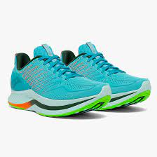
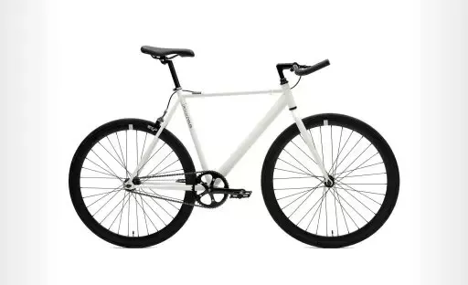

-
Test Image

Output on Wolfram Image Identification:
Cleats
Output on MobileNet Model: Running Shoes
-
Test Image

Output on Wolfram Image Identification:
Bycycle seat
Output on MobileNet Model: Mountain bike, All-terrain bike, Off-roader
-
Test Image

Output on Wolfram Image Identification: Bottled Water
Output on MobileNet Model: Water bottle